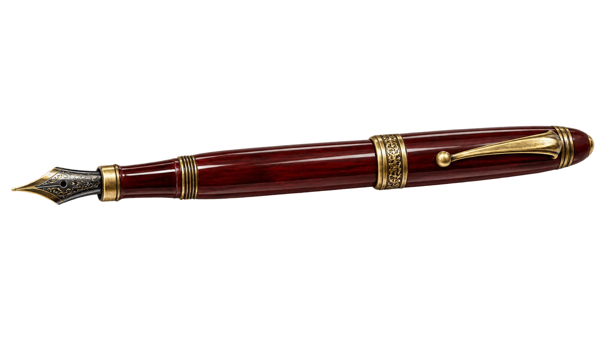

DOSYA NO: 01 · 36 HAFTALIK VAKA
Okulun unutulmuş köşelerinde yarım kalmış bir hikâye var. Bulduğun her kanıt, seni onun gerçek sahibine yaklaştıracak.

SEZON DOSYASI
Her perde, aynı hikâyenin başka bir katmanını açar. Bağlantılar ancak kanıt toplandıkça görünür.
Bulduğun kanıtlar, açık sorular ve kendi cümlelerin burada kalıcı olarak saklanır.